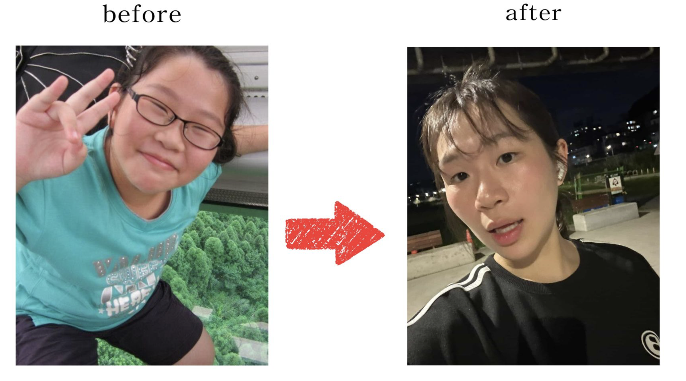
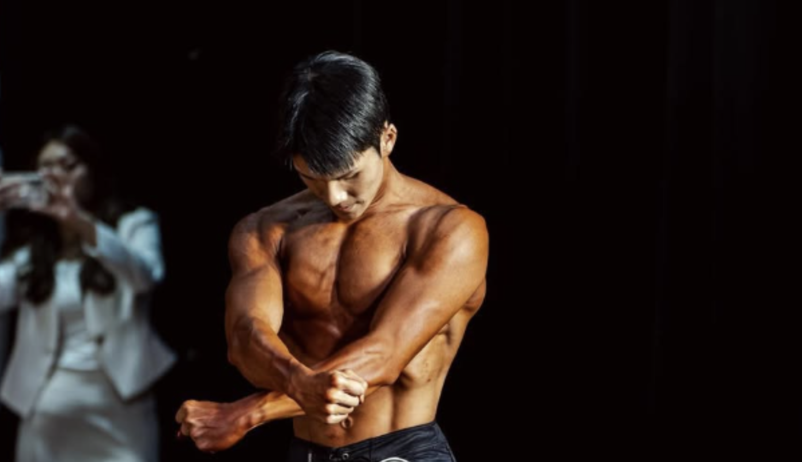
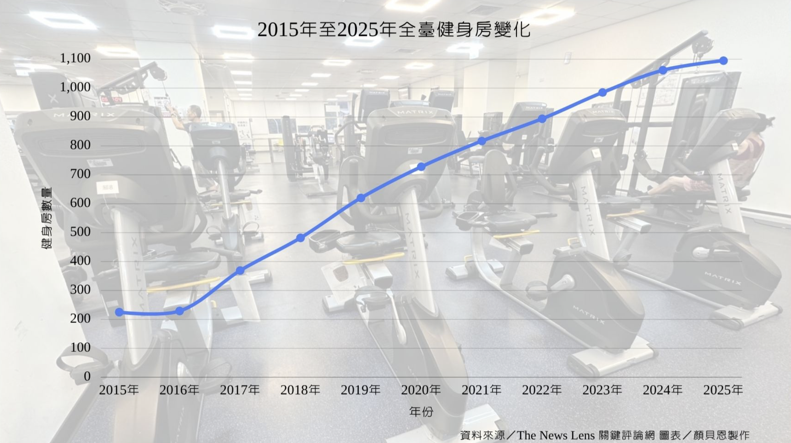
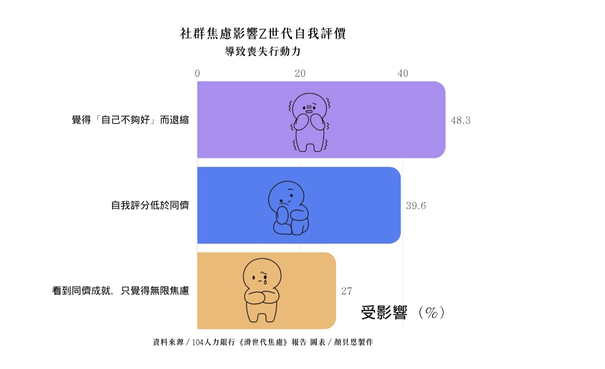

「為什麼我一直瘦不下來？尤其坐著的時候，肚子的贅肉真的很明顯。」就讀國立政治大學國際經營與貿易學系的吳佩璇坦言，自己對飲食與身材管理極為嚴格，但仍身處於低頭看見就會焦慮的處境，總會帶給他極大的心理壓力與挫折，甚至開始懷疑自己。
這份對身材的焦慮，源自吳佩璇從小到大的噩夢。「國小的時候胖到快80公斤，之後就一直陷在反覆減肥以及復胖的循環裡，到現在60幾公斤。」吳佩璇無奈地說，過去的努力始終沒換來穩定健康的成果。為了徹底終結這個惡性循環，他決定認真展開行動，破釜沉舟地透過自媒體公開記錄，藉由大家的陪伴與見證，督促自己養成規律運動的習慣。

理想體態的追尋：Z世代的多元身材困境
打開社群媒體，健身成果照、減重前後對比圖，以及各式各樣的體態管理分享已成為常見內容。當身邊的朋友、網紅與明星持續展示理想身材與健身成果時，你是否也曾不自覺地將自己和他們比較？在社群媒體與主流審美觀的影響下，越來越多人將「更瘦」或「更有肌肉線條」的體態視為健康與美感的象徵，並以此作為評價自身外貌的標準。當這些想法反覆出現，並逐漸影響個人對自身外貌與身材的評價時，便會形成所謂的「體態焦慮（Body Image Anxiety）」（註一）。
根據加拿大滑鐵盧大學（University of Waterloo）發表於國際期刊的研究，高達 55% 的Z世代（Generation Z）（註二）對自身體態感到不滿意，這與他們花費大量時間使用社群媒體，如 Instagram（以下簡稱IG）、抖音等高度相關。另外，根據Meta內部研究曝光，演算法會向本就對外貌感到焦慮的青少年，推播更多「飲食失調」的內容，進而形成惡性循環。隨著社群媒體的普及，大量關於良好體態的意象不斷被大量傳播，Z世代常在不知不覺中陷入「社會比較」（註三），導致嚴重的身材焦慮與自信心下降。
不只看到他人而產生的焦慮，Z世代也會擔心自己上鏡的狀況，進而選擇開始管理體態。長期面臨過瘦困擾的Sam（化名）分享，長時間對於自身體態的不滿意，讓他下定決心開始培養定期健身習慣。每當看見照片中的自己，他總覺得身形過於單薄，且相較於社群媒體上常見的穿搭分享，他也認為自己的身材較難以支撐起衣服的版型，進而開始對自己的身材產生焦慮。與Sam的情況截然相反的于小姐 ，「我發現在鏡頭前面胖胖的會不好看。」身為舞台表演者的他會因為擔心自己在鏡頭前的樣子看起來過胖而產生焦慮，從而開始嘗試各種減重的方式。
有別於因體態焦慮而開始體態管理，身為退役籃球運動員的恐龍（化名），則是藉由健身降低運動傷害風險，同時他也相當在意自身的穿搭效果與照片呈現。透過持續鍛鍊，維持自身陽光、健康且充滿精神的形象，健美選手徐同學（化名）表示：「我的想法很單純，我想要成為一個自律的人。」在徐同學的想像中，自律的人通常具備規律運動的習慣。

「我一直都知道自己需要減肥，但始終都沒有去執行，直到健康出現問題，才下定決心要減重。」相較於追求理想體態或培養自律習慣，政大傳播學院大一大二不分系學生張皓承吐露，自己則是因健康因素而開始體重管理。從國小四年級就出現過胖的現象，但是大學期間逐漸惡化的健康狀況，才讓他認真正視自己的體重問題。大一時，他經常出現睡眠呼吸中止症的情況，且在大二寒假期間，他因椎間盤突出進行了手術，術後醫生建議他進行減重，以降低身體的負擔，這才使他透過飲食控制進行體重管理。同樣因面臨健康問題開始進行體態管理的政大廣告系學生鍾心咪表明，剛開始他並未特別察覺體重對於身體健康的影響，直到大三開始頻繁生病，每個月都需要回診與服藥的情況，才讓他開始正視自己的身體健康。
從動機到行動：體態與健康管理的實踐方式
每個人投入體態管理的理由各不相同，但多數人體態管理的方式都選擇以健身和飲食控制作為主要方法。
一、吳佩璇
吳佩璇的體態管理目標並非單純減重，而是透過重訓在減脂的同時維持，甚至增加肌肉量。由於肌肉量會影響基礎代謝率，若只靠節食減重容易造成肌肉流失。因此他以重量訓練為主，並搭配跑步等有氧運動，希望能更有效率地達成減脂目標。此外，吳佩璇也表示，體態管理並非完全禁止特定食物，而是著重於長期保持的均衡飲食習慣。他強調，少量攝取喜歡的食物並不會對體態造成太大影響，真正重要的是整體飲食方向是否健康。此外，他特別重視每日熱量與蛋白質的攝取，並透過紀錄飲食內容，確保熱量達到基礎代謝需求，同時攝取足夠蛋白質以維持肌肉量。
二、鍾心咪
鍾心咪每週固定進行三至四次健身訓練，內容涵蓋肩部、手臂、背部及腿部肌群訓練，並搭配有氧運動，以增肌減脂為主要目標；飲食方面，則以高蛋白、低油脂及均衡營養為原則，每日餐食皆需包含碳水化合物、蔬菜及優質蛋白質，如雞胸肉、雞蛋等。相較於嚴格計算熱量攝取，他表明，自己更重視蛋白質與碳水化合物的攝取比例。他認為，充足的蛋白質有助於維持肌肉量與促進增肌效果。為了維持腸胃健康與代謝功能，鍾心咪也固定補充益生菌，藉此改善消化狀況與排便規律性。
從螢幕認識世界：網路評價無形限縮 Z世代的視野
Z世代成長於網路與社群媒體高度普及的年代，也正好處於自我認同逐漸建立的重要階段，政大心理學研究所臨床組心理師高晟洋指出，在這個世代的年輕人特別在意他人的眼光，容易透過觀察、模仿同儕與網路上的意見來建立對自己的認知。

現在人們只要點開手機，螢幕裡往往呈現的都是演算法（註四）根據使用者在社群媒體上的搜尋紀錄與互動行為篩選出的結果。演算法會分析使用者停留在時間、按讚、分享或略過等行為，判斷其感興趣的內容並持續推薦相似資訊。當使用者因為好奇健身減脂資訊，或對自身體態感到焦慮，而在分享減重經驗主題的短影音多停留幾秒時，平台便可能開始大量推送相關內容。久而久之，使用者容易誤以為身邊的人都在健身、減脂或進行體態管理，進而放大對自身外貌與身材的焦慮。
在網路世界裡，按讚數、觀看量與留言逐漸成為大眾對照自我的數位「鏡子」，國立臺灣師範大學健康促進與衛生教育學系教授張鳳琴說道：「以社會理論來説，孩子們會認為『為什麽別人可以這樣，而我卻不行』的心理壓力。」因此當Z世代使用社群的時間越多，容貌焦慮的現象也會隨之提高。Sam分享，網路上確實會呈現一種現象，男生好像一定要有肌肉才算好看，進而影響他對自己身材的要求。身為自媒體經營者的吳佩璇則喜歡在限時動態分享運動、飲食與生活紀錄。他分享，每當在網路上分享自己的減重日常，粉絲們也會跟他有精神上的鼓勵和互動。Z世代透過他人的回饋來評估自己的改變時，政大社會學系教授馬藹萱也提出擔憂：「在網路世界透過他人的回饋來建立自信，恐怕是脆弱的。」
除了心理上的焦慮，網紅推崇的瘦身生活，也演變成一場真實生活中的經濟考驗。從健身房會員、保健食品到健康餐盒，社群媒體經常將健康生活與高額花費畫上等號，進一步形塑大眾對「健康飲食很貴」的印象。然而，人們在評估健康生活時，往往忽略了背後投入的時間與心力。黃資富指出：「在忙碌的現代生活裡，很多人會選擇花錢買時間，因此願意付出較高的價格來追求健康；但如果你願意把錢省下來，換言之，用時間來自製餐點也是一個選擇。」鍾心咪便是這樣的例子，從每天提早起床採買食材、準備餐點，到回家後自行料理，甚至提前準備隔天要帶到學校的便當。

面向四收尾：社群媒體引領風潮 健康生活有了新樣貌
除了傳統健身房之外，皮拉提斯、瑜珈等課程也受到歡迎，而結合遊戲元素的應用程式，例如捕捉寶可夢Pokémon GO、跑步作畫GPS Art、皮克敏Pikmin Bloom，也讓運動不只是單純的訓練，而成為Z世代的一種日常娛樂方式。

當社群媒體強調形象經營，使用者往往傾向於展現自己理想中的樣貌，張鳳琴表示：「大家在社群媒體上展示自己時，通常會呈現想被別人看見的那一面，發出來的往往是修圖、美肌後的樣子。如果大吃大喝後覺得狀態不好，可能就不會發文。」藉由形塑近乎「完美」的網路形象，也在無形之中影響大眾對理想體態的想像。

根據教育部體育署在112年度的調查報告顯示，對身材要求最嚴苛、體態最纖瘦的群體，大多分佈在新竹以北；反觀屏東一帶，儘管體型相對豐腴，不過少了大城市裡日常相互比較的催化，大家對於身材的困擾與擔憂反而隨之減輕。體態的批判也反映出時代的改變。在過去生活條件普遍艱困的年代，體態肥胖曾是富貴與福氣的象徵；但在現代社會的語境裡，纖瘦、自律與成功卻逐漸被劃上等號，而肥胖卻往往被貼上「沒有做好自我管理」的標籤。當身材成為評價一個人是否自律、是否成功的依據時，體態焦慮也逐漸滲透進日常生活之中。
不同人對理想體態有不同追求，有些人希望改善臀腿線條，有些人則著重胸肌、背部等上半身肌群。然而，重量訓練往往需要學習正確的發力方式與動作技巧，對初學者而言必須投入時間摸索與練習。即便如此，越來越多人仍願意投入運動，顯示體態管理已逐漸成為Z世代生活中的重要課題。而推動這股風潮的原因，除了健康意識提升之外，也與社群媒體的普及有關。當社群平台強調形象經營，使用者往往傾向展現自己理想中的樣貌，進一步影響大眾對於「好身材」的想像與期待。